Tema 5 · L'Enllaç Químic
Apunts esquemàtics · Fonaments de Química (Grau d'Enginyeria Química). Les caixes ➕ AMPLIACIÓ afegeixen contingut que no és a les diapositives.
- Introducció: què és l'enllaç químic
- Enllaç covalent (I): Teoria de Lewis
- Enllaç covalent (II): Geometria – VSEPR
- Polaritat d'enllaç i moment dipolar
- Tractament mecanoquàntic
- Teoria d'Orbitals Moleculars (OM)
- Enllaç iònic
- Enllaç metàl·lic i teoria de bandes
- Annex: Teoria de l'Enllaç de València i hibridació
- Resum final comparatiu
1. Introducció: l'enllaç químic
1.1 Què és?
- A la natura els àtoms gairebé mai estan aïllats → es combinen en molècules o compostos amb propietats diferents de les dels àtoms que els formen.
- Quan ≥ 2 àtoms (sovint molts) es mantenen a curta distància de forma estable i permanent, hi ha d'haver una interacció que els uneix.
- Enllaç químic = la força causant d'aquesta unió. La seva existència és evident (existeixen molècules), però és difícil de definir; el tipus d'enllaç dóna propietats radicalment diferents.
1.2 Configuració de gas noble i regla de l'octet
- Gasos nobles (grup 18): es troben com a gasos monoatòmics; molt estables, inerts, gairebé sense reactivitat.
- La seva estabilitat s'associa a la configuració … ns² np⁶ → regla dels 8 electrons o de l'octet.
- Formant compostos, els elements tendeixen a assolir configuració de gas noble:
- Cedint i guanyant electrons → elements amb electronegativitats molt dispars (iònic).
- Compartint electrons → elements amb electronegativitats semblants (covalent).
1.3 Tipus d'enllaç (casos límit)
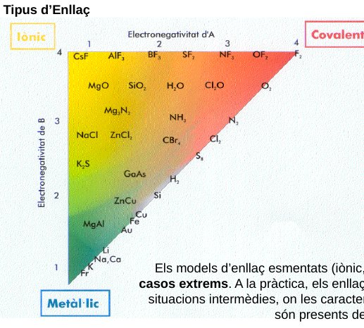
| Tipus | Mecanisme | Exemple |
|---|---|---|
| Iònic | Transferència d'electrons | Cs → Cs⁺ + e⁻ ([Xe]) F + e⁻ → F⁻ ([Ne]) |
| Covalent | Compartició d'electrons | Cl₂ (Cl: [Ne]3s²3p⁵) |
| Metàl·lic | Gregarització (mar) d'electrons | Na: [Ne]3s¹ → Na+Na+Na+… |
| Δχ | Tipus d'enllaç | Exemple |
|---|---|---|
| 0 – 0,4 | Covalent apolar | H₂, Cl₂, C–H |
| 0,4 – 1,7 | Covalent polar | H–Cl (0,9), O–H (1,4) |
| > 1,7 (aprox.) | Predominantment iònic (> 50 % caràcter iònic) | NaCl (2,1), CsF (3,3) |
2. Enllaç covalent (I): Teoria de Lewis
2.1 Context
- Els tractaments rigorosos (mecànica quàntica) són molt complicats, tot i que permeten predir amb precisió geometries, energies d'enllaç, etc.
- Teoria de Lewis (G. N. Lewis, 1916, abans de la mecànica quàntica): recull observacions empíriques. Teoria qualitativa que explica l'enllaç covalent en molècules.
- Concepte central: electrons de valència.
2.2 Electrons de valència
- Elements dels grups principals: electrons de la capa amb n més alt. Es representen com a punts al voltant del símbol (notació de Lewis): nº de punts = nº de grup (en la numeració 1A–8A).
- Metalls de transició: la subcapa (n−1)d té energia semblant a ns → es consideren potencialment de valència tots els electrons fora de la capa tancada de gas noble anterior (inclosos els (n−1)d).
2.3 Base empírica
- Les úniques espècies monoatòmiques en estat natural són els gasos nobles.
- Els ions monoatòmics també solen tenir estructura de gas noble.
- La capa de valència completa (ns²np⁶) sembla associada a una estabilitat especial.
2.4 Regla de l'octet (teoria original)
- Els àtoms es combinen de manera que tendeixen a tenir 8 electrons a la capa de valència (octet). L'hidrogen només en pot tenir 2 (duet).
- Una parella d'àtoms enllaçats comparteix els electrons necessaris; els electrons compartits compten per a l'octet dels dos àtoms.
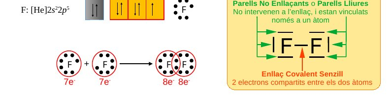
- Parell enllaçant: 2 e⁻ compartits entre dos àtoms (una línia —).
- Parell lliure / no enllaçant: no intervé en l'enllaç, vinculat només a un àtom.
- Enllaç covalent senzill: 1 parell compartit.
2.5 Enllaços múltiples
Si l'octet no es pot satisfer amb enllaços senzills, es comparteixen més parells → enllaços dobles (=, 4 e⁻) i triples (≡, 6 e⁻).
| Molècula | Estructura | e⁻ compartits / no compartits per àtom | Energia d'enllaç (kJ·mol⁻¹) | Distància (Å) |
|---|---|---|---|---|
| CO₂ | O=C=O (2 dobles, 4 parells lliures) | C: 0 + 8 · O: 4 + 4 | — | — |
| N₂ | |N≡N| (1 triple, 2 parells lliures) | N: 2 + 6 | 941 | 1,10 |
| O₂ | O=O (doble) | O: 4 + 4 | 494 | 1,21 |
| F₂ | F–F (senzill) | F: 6 + 2 | 160 | 1,42 |
2.6 Notació de les estructures de Lewis
- Electrons compartits: línies (— 2 e⁻, = 4 e⁻, ≡ 6 e⁻) → indiquen l'ordre d'enllaç.
- Parells lliures: línies posades entorn de l'àtom o dos punts.
- Electró desaparellat: un punt.
2.7 Procediment sistemàtic (8 passos)
Pas 1 · Nombre d'electrons de valència
- A partir de la configuració electrònica. Afegim e⁻ si és anió, eliminem si és catió.
| PF₃ | CO₃²⁻ | NO₂⁺ |
|---|---|---|
| P: 1×5 = 5 F: 3×7 = 21 Total 26 | C: 1×4 = 4 O: 3×6 = 18 càrrega: +2 Total 24 | N: 1×5 = 5 O: 2×6 = 12 càrrega: −1 Total 16 |
Pas 2 · Esquelet (connectivitat)
- Àtoms centrals: units a ≥ 2 àtoms. Terminals: units a un sol àtom.
- Si no hi ha referents: els H sempre són terminals; normalment l'àtom central és el més electropositiu (menys electronegatiu).
- ⚠ En aquest punt encara NO es pot determinar la geometria; només la connectivitat.
Pas 3 · Unir amb enllaços senzills
Cada enllaç consumeix 2 e⁻: PF₃ 26−6 = 20; CO₃²⁻ 24−6 = 18; NO₂⁺ 16−4 = 12.
Pas 4 · Afegir els electrons restants
Per parelles, començant pels terminals i acabant pels centrals, sense superar l'octet (estrictament només per a àtoms del 2n període). PF₃: 10 parells; CO₃²⁻: 9 parells; NO₂⁺: 6 parells.
Pas 5 · Ajustar octets
Si un àtom central no compleix l'octet, es desplacen parells lliures dels terminals cap a l'enllaç (formant enllaços múltiples) fins que tots compleixen.
- PF₃: ja tots tenen 8 e⁻ ✔.
- CO₃²⁻: C té 6 → un O forma doble enllaç → O=C(–O)–O ✔.
- NO₂⁺: N té 4 → dos dobles enllaços → O=N=O ✔.
Pas 6 · Càrregues formals (CF)
- Electrons compartits: a cada àtom li correspon la meitat.
- Parells lliures i electrons desaparellats: s'imputen només a l'àtom on són.
- Σ CF = càrrega total de la molècula/ió.
| Espècie | CF | Total |
|---|---|---|
| PF₃ | P 0, F 0, 0, 0 | 0 |
| CO₃²⁻ | C 0, O(doble) 0, O(senzills) −1, −1 | −2 |
| NO₂⁺ | O 0, N +1, O 0 | +1 |
Pas 7 · Verificació
L'estructura completa ha d'indicar: els enllaços i el seu ordre, els parells lliures (i e⁻ desaparellats) i les càrregues formals no nul·les.
Pas 8 · Estructures ressonants equivalents
Cal explicitar-les per identificar quins àtoms i enllaços són equivalents; si cal, calcular CF i ordres d'enllaç efectius (vegeu 2.8).
2.8 Ressonància
- Estructures ressonants: estructures de Lewis correctes, diferents entre si, amb la mateixa connectivitat (només canvien els electrons). Es separen amb una fletxa senzilla de dues puntes ↔ (NO la doble fletxa d'equilibri ⇌).
- La molècula és un híbrid de ressonància: l'estructura real és una superposició (mescla) de les formes, no necessàriament amb el mateix pes.
- NO vol dir que la molècula s'estigui interconvertint d'una estructura a l'altra.
- Indica que una sola estructura de Lewis no pot representar la molècula: és una limitació per expressar la realitat.
Experimentalment: els tres enllaços C–O són idèntics, més curts que un C–O senzill i més llargs que un C=O; els 3 O tenen la mateixa càrrega → compatible amb la superposició de les 3 formes a parts iguals.
Per a formes ressonants equivalents es calculen valors promig:
2.9 Excepcions a la regla de l'octet
| Grup | Descripció | Exemples |
|---|---|---|
| 1. Espècies radicalàries (nombre senar d'e⁻) | Almenys un àtom no pot completar l'octet. Espècies molt reactives (l'electró desaparellat les fa reaccionar amb altres molècules). | NO₂: 5 + 2×6 = 17 e⁻ → 8 parells + 1 e⁻ desaparellat (4 formes ressonants) |
| 2. Espècies deficients en electrons (valència baixa) | Àtoms centrals dels grups 2 (Be) i 13 (B): tenen pocs e⁻ propis; completar l'octet comportaria càrregues formals negatives molt elevades, desfavorable. | BeH₂: 2+2 = 4 e⁻ → H–Be–H, Be amb 4 e⁻. BF₃: 3+21 = 24 e⁻ → B amb 6 e⁻ (la forma amb B=F compleix l'octet però amb CF contradictòries amb les χ). |
| 3. Capes de valència expandides | Àtoms centrals del 3r període o superior amb CF no nul·les: es poden formar parells d'enllaç addicionals per reduir les CF, encara que se superi l'octet. | SO₂: 6+12 = 18 e⁻. |O–S=O| (CF −1,+1) → O=S=O (CF zero, S amb 10 e⁻). |
- Si no es poden aconseguir CF nul·les: millor CF d'acord amb les χ dels àtoms implicats.
- Els àtoms terminals sempre respecten l'octet.
2.10 Quina estructura és la més correcta? (per ordre de prioritat)
- Descartar les que no compleixen l'octet si n'hi ha que sí (compte amb grups 2 i 13). CH₃N: H₂C=N–H ✔ davant de H₃C–N amb N sense octet.
- Descartar cicles de 3 membres davant de lineals (molt tensionats, poc estables). S₂O: S=S=O ✔. (Àtoms més electropositius → centrals.)
- Preferir les que satisfan l'octet amb el menor nombre de CF no nul·les. NO₂⁺: O=N=O ✔ davant d'O–N≡O.
- Descartar les que tenen àtoms adjacents amb CF del mateix signe (repulsió). S₂N₂: estructura cíclica de 4 ✔.
- Descartar les que tenen CF en desacord amb les χ o el mateix element amb CF de signe oposat. N₂O: |N≡N–O| (CF negativa sobre O) ✔; N=O=N ✗ (no compleix l'octet, O central amb +).
- Entre isòmers, el més estable sol ser el que té més estructures de ressonància. H₂N₂O₂: la nitroamina H₂N–NO₂ ✔ davant del dímer de l'HNO.
- L'estructura més estable sol ser la que té la suma de diferències d'electronegativitat entre àtoms enllaçats més gran. HOCl: H–O–Cl (Σ Δχ = 1,4+0,5 = 1,9) ✔ davant H–Cl–O (1,4).
2.11 Limitacions de Lewis
- Anterior a la mecànica quàntica; regles simples però excepcions.
- És bàsicament per a l'enllaç covalent.
- Es limita a l'estructura (connectivitat).
- No es pronuncia sobre l'energia de la molècula.
- No diu res de la geometria (forma). P. ex. H₂O és lineal o angular? I CO₂?
3. Enllaç covalent (II): Geometria molecular – VSEPR
3.1 Idea bàsica
- VSEPR (Valence Shell Electron Pair Repulsion, en català RPECV): teoria de base electrostàtica per predir la geometria a partir de les estructures de Lewis. Forma actual: Nyholm i Gillespie (1957); original de Sidgwick i Powell (1940) / Tsuchida (1939).
- Lewis → estructura (connectivitat). VSEPR → geometria (orientació a l'espai, angles, forma global).
- Model: distribuir un conjunt de càrregues puntuals iguals sobre la superfície d'una esfera de radi r de manera que la distància entre elles sigui màxima (repulsió mínima).
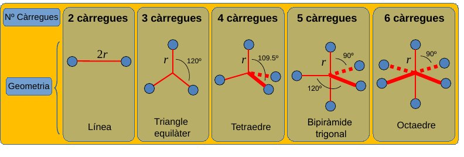
- Un enllaç = 2 e⁻ (un parell). Un parell lliure també és un parell.
- Els enllaços múltiples compten com un únic parell (els e⁻ no es poden separar: enllacen els mateixos àtoms).
3.2 Nombre estèric
- n = nº d'enllaços (simples o múltiples, cadascun compta 1) → «X». m = nº de parells lliures → «E».
| Molècula | PF₃ | NO₂⁺ | N₂O | CO₃²⁻ |
|---|---|---|---|---|
| Nombre estèric (n+m) | 4 | 2 | 2 | 3 |
| Enllaços (n) | 3 | 2 | 2 | 3 |
| Parells lliures (m) | 1 | 0 | 0 | 0 |
Dues situacions: àtom central sense parells lliures (AXₙ) i amb parells lliures (AXₙEₘ).
3.3 Molècules AXₙ (sense parells lliures)
| Tipus | Geometria | Angle | Exemples |
|---|---|---|---|
| AX₂ | lineal | 180° | BeF₂, HgCl₂, CO₂ |
| AX₃ | triangular plana (trigonal) | 120° | BF₃, BCl₃, CO₃²⁻ |
| AX₄ | tetraèdrica | 109,5° | CH₄, SiCl₄ |
| AX₅ | bipiràmide trigonal | 90° (ax–eq), 120° (eq–eq) | PF₅, PF₃Cl₂ |
| AX₆ | octaèdrica | 90° | SF₆ |
3.4 Molècules AXₙEₘ (amb parells lliures)
- Els parells lliures són zones d'alta densitat electrònica més localitzades a prop del nucli → repulsen més.
(X = enllaç; E = parell lliure. Els parells enllaçants estan compartits entre dos nuclis, no un sol, i per això són menys voluminosos.)
Procediment:
- Determinar la geometria bàsica per a n+m parells.
- Distribuir enllaços i parells lliures tenint en compte la intensitat de repulsió.
- La geometria derivada és la que s'observa (només es veuen els àtoms, no els parells lliures).
Per la repulsió diferent, els angles d'enllaç difereixen dels originals.
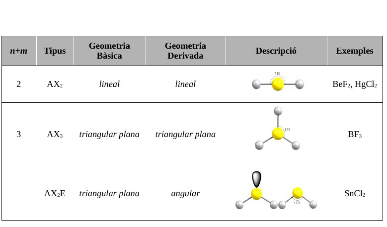
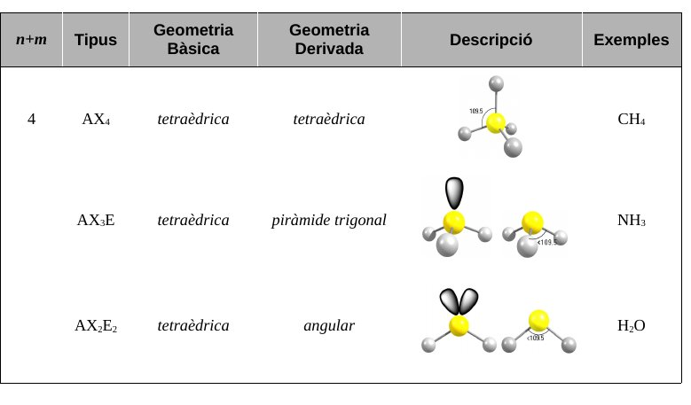
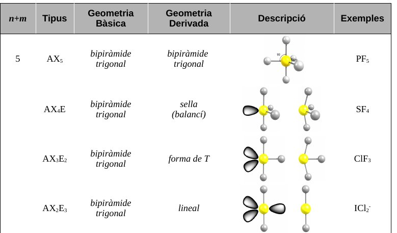
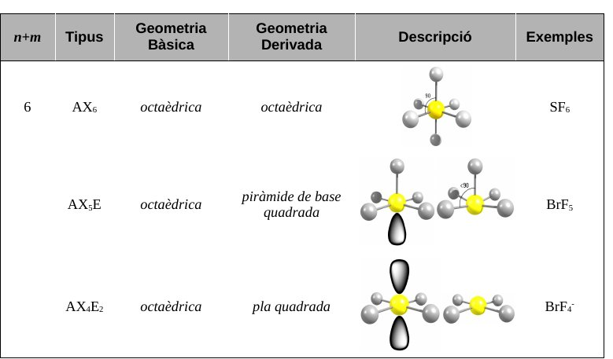
El cas AX₄E (balancí / sella de muntar)
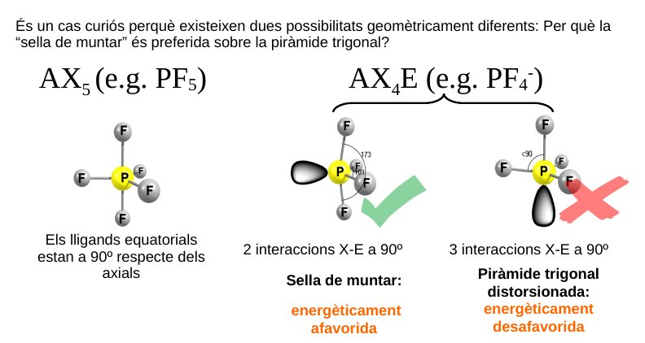
3.5 Resum de geometries VSEPR
| n+m | Geometria bàsica | AXₙEₘ → Geometria derivada (exemple) |
|---|---|---|
| 2 | lineal | AX₂ lineal (CO₂) |
| 3 | trigonal plana | AX₃ trigonal plana (BF₃) · AX₂E angular (SnCl₂, SO₂, O₃) |
| 4 | tetraèdrica | AX₄ tetraèdrica (CH₄) · AX₃E piràmide trigonal (NH₃) · AX₂E₂ angular (H₂O) · AXE₃ lineal (HF) |
| 5 | bipiràmide trigonal | AX₅ bipiràmide trigonal (PF₅) · AX₄E balancí (SF₄) · AX₃E₂ forma de T (ClF₃) · AX₂E₃ lineal (ICl₂⁻, XeF₂) |
| 6 | octaèdrica | AX₆ octaèdrica (SF₆) · AX₅E piràmide base quadrada (BrF₅) · AX₄E₂ pla quadrat (BrF₄⁻, XeF₄) · AX₃E₃ forma de T · AX₂E₄ lineal |
(Cas trivial: n+m = 1 → AXE₀, sempre lineal.)
3.6 Distorsions de la geometria
- Si hi ha parells no enllaçants, la seva repulsió amb els enllaçants no és igual que la que exerceixen els enllaçants entre si.
- Si els enllaços de l'àtom central no són iguals (àtoms diferents o enllaços múltiples), també es distorsiona.
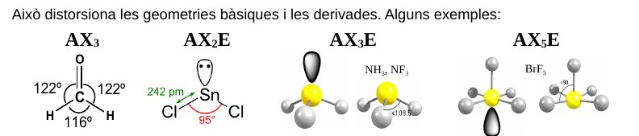
4. Polaritat d'enllaç i moment dipolar
- Iònic (intercanvi net d'e⁻) i covalent (compartició simètrica) són límits ideals; la realitat sovint és intermèdia.
- Si els àtoms tenen electronegativitats diferents, la compartició no és simètrica: la densitat electrònica és atreta pel més electronegatiu → enllaç covalent polar.
- Element més electronegatiu (B): excés de càrrega negativa δ−.
- Element més electropositiu (A): excés equivalent positiu δ+.
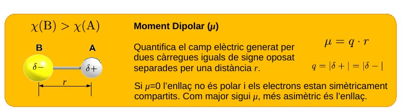
- Moment dipolar (μ): quantifica el camp elèctric de dues càrregues iguals i de signe oposat a distància r. μ = 0 → enllaç apolar (e⁻ compartits simètricament). Com més gran μ, més asimètric.
- Unitat: Debye, 1 D = 3,33564·10⁻³⁰ C·m.
- En una molècula, el μ total és la suma vectorial dels moments de cada enllaç. Convenció de la diapositiva: el vector uneix les càrregues i apunta cap a la positiva (en química sovint es dibuixa al revés, cap a δ−; cal fixar-se en el conveni).
- Pot haver-hi molècules apolars amb enllaços polars, per simetria.
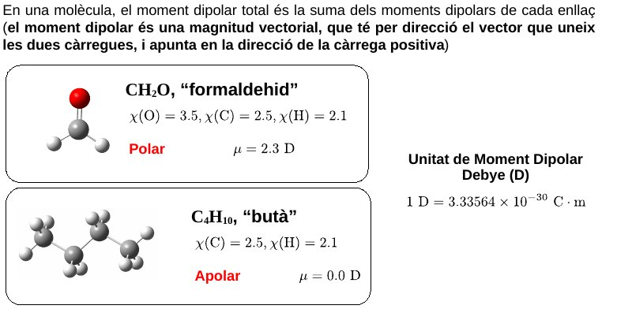
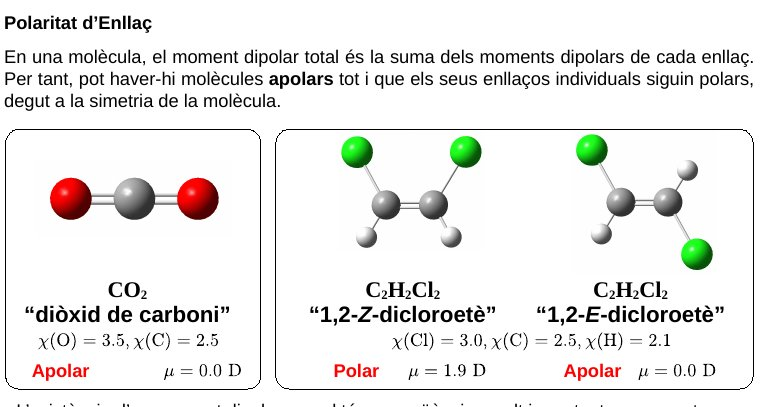
Limitacions de Lewis + VSEPR
Descriuen ràpidament estructura i geometria de molècules discretes, però:
- No diuen res de l'enllaç metàl·lic (ni massa de l'iònic).
- No diuen res de l'energètica dels enllaços.
- Problemes amb molècules radicalàries: O₂ es prediu amb tots els e⁻ aparellats, però té dos e⁻ desaparellats i és paramagnètic.
- No expliquen molts modes d'enllaç: diborà B₂H₆ (ponts B–H–B), química inorgànica, organometàl·lica…
- No expliquen que el ciclobutadiè sigui inestable mentre que el benzè és molt estable.
5. Tractament mecanoquàntic de l'enllaç
- Aproximació de Born–Oppenheimer: els nuclis es consideren quiets (molt més massius que els e⁻).
- Hamiltonià electrònic: Ĥel = T̂e + V̂Ne + V̂ee
energia cinètica dels e⁻ · atracció e⁻–nucli · repulsió e⁻–e⁻
- Funció d'ona electrònica → distribució dels e⁻ respecte els nuclis → origen físic de l'enllaç i dels seus tipus.
- Energies electròniques → comparades amb les dels àtoms lliures donen l'energia d'enllaç (energia per trencar-los).
Dues grans teories
| Enllaç de València (EV) | Orbitals Moleculars (OM) |
|---|---|
| Enllaç = recobriment d'orbitals atòmics monoocupats dels dos àtoms que s'enllacen. | Els orbitals atòmics de tots els àtoms es combinen i generen orbitals moleculars, que s'ocupen per ordre creixent d'energia. |
| Enllaços localitzats entre dos àtoms. | OM deslocalitzats sobre tota la molècula. |
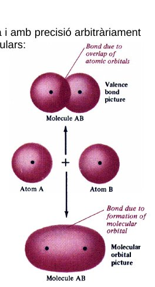
6. Teoria d'Orbitals Moleculars (OM)
6.1 Concepte
- Extensió del que s'ha fet per a àtoms polielectrònics: la solució s'expressa en funcions d'ona d'un sol e⁻, ara orbitals moleculars, deslocalitzats sobre tota la molècula.
- OM: funció d'ona monoelectrònica que descriu l'estat d'un únic e⁻ dins la molècula.
- |φ|² = densitat de probabilitat de trobar l'electró en un punt de l'espai (igual que els OA).
6.2 Aproximació CLOA (combinació lineal d'orbitals atòmics)
φᵢ = OM i-èssim · ψⱼ = OA j · cij = pes de l'OA j en l'OM i · NOA = total d'OA de la molècula
- La combinació de n OA dóna n OM linealment independents.
- Només es poden combinar OA que tinguin: energies semblants i simetria adequada.
6.3 El cas més simple: H₂
Àtoms A i B amb un OA cadascun (1sA, 1sB) → 2 OM:
- φ₁ = 1sA + 1sB (σ1s, enllaçant): densitat més gran entre els nuclis que en àtoms independents → estabilització.
- φ₂ = 1sA − 1sB (σ*1s, antienllaçant): densitat més petita entre nuclis, amb un pla nodal → desestabilització.
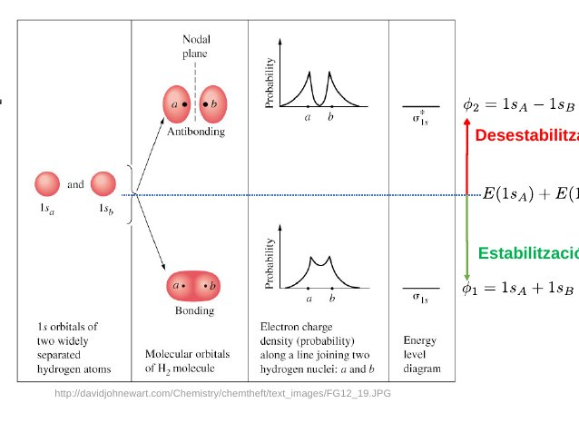
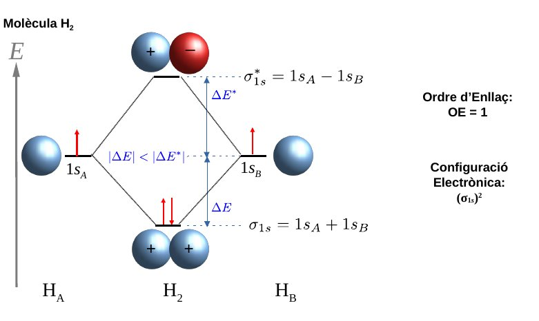
6.4 Regles qualitatives per construir OM
- Nº d'OM obtinguts = nº d'OA inclosos a la CLOA.
- Els OM enllaçants són més estables que els OA que els generen; els antienllaçants, més inestables.
- Com més superfícies nodals perpendiculars a l'eix, més energètic (inestable) és l'OM.
- La intensitat de la interacció (energia d'estabilització/desestabilització) augmenta (1) com més semblants són les energies dels OA i (2) com més gran és el seu solapament. OA de diferent simetria → solapament zero → no es barregen.
6.5 Ocupació i ordre d'enllaç
- S'omplen els OM amb els e⁻ dels àtoms, començant pels més estables, seguint el principi d'exclusió de Pauli (màx. 2 e⁻ per OM, spins oposats) i la regla de Hund (màxima multiplicitat en OM degenerats).
- Configuració electrònica: igual que en àtoms, amb la nomenclatura dels OM.
Com més gran l'OE, més fort l'enllaç. OE = 0 → no hi ha enllaç. (L'OE pot ser fraccionari.)
6.6 Diatòmiques del 1r període
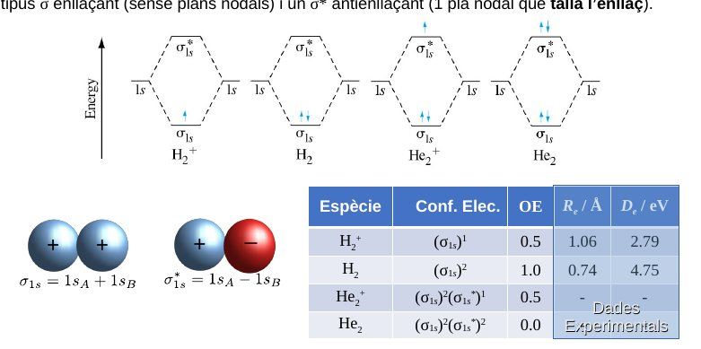
| Espècie | Configuració | OE | Rₑ (Å) | Dₑ (eV) |
|---|---|---|---|---|
| H₂⁺ | (σ₁ₛ)¹ | 0,5 | 1,06 | 2,79 |
| H₂ | (σ₁ₛ)² | 1,0 | 0,74 | 4,75 |
| He₂⁺ | (σ₁ₛ)²(σ*₁ₛ)¹ | 0,5 | 1,08 | 2,5 |
| He₂ | (σ₁ₛ)²(σ*₁ₛ)² | 0,0 | — (no existeix) | ≈ 0 |
Les dades experimentals confirmen: OE més gran → enllaç més curt i més fort.
6.7 Tipus d'OM segons la simetria
| Tipus | Característica | Combinacions | Degeneració |
|---|---|---|---|
| σ | Simetria de revolució (cilíndrica) entorn de l'eix d'enllaç. Cap superfície nodal que contingui l'eix. Solapament gran. | s+s, s+pz, pz+pz, dz²+pz | 1 |
| π | Una superfície nodal que conté l'eix. Solapament menor que σ. | px+px, py+py, dxz+px | 2 (πx, πy) |
| δ | Dues superfícies nodals que contenen l'eix. Solapament menor que π. | dx²−y²+dx²−y², dxy+dxy | 2 |
Cada tipus té la seva versió antienllaçant (σ*, π*, δ*) amb un pla nodal addicional perpendicular a l'eix.
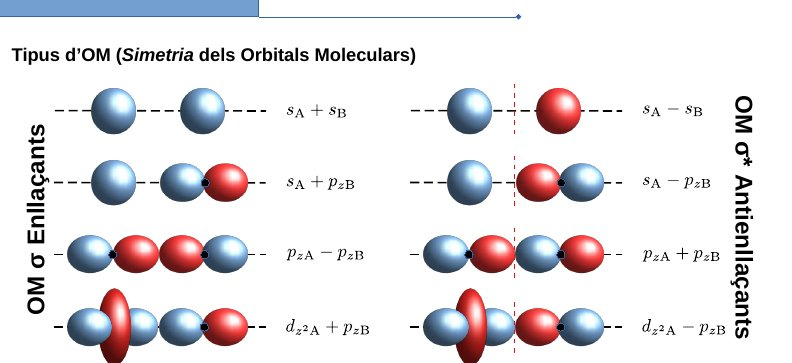
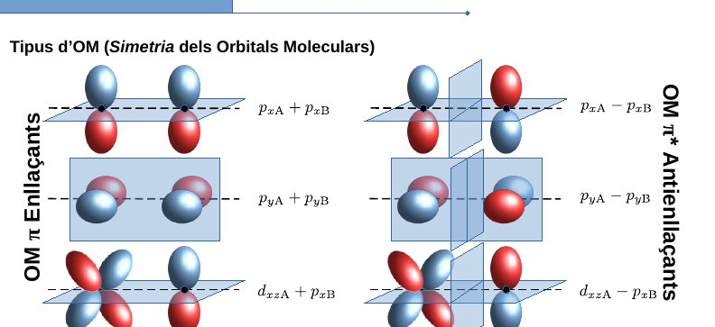
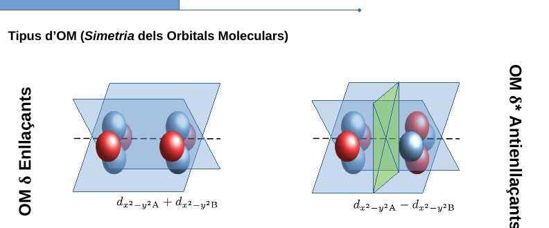
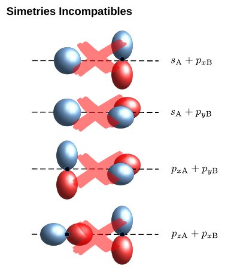
Recobriment nul: l'orbital s té recobriment nul amb p o d dirigits perpendicularment a l'eix intermolecular; els orbitals p només recobreixen amb p de la mateixa orientació.
6.8 Diatòmiques homonuclears del 2n període (A₂)
- Ara hi ha OA 2s i 2p. Els 1s (completament plens a partir d'He) no contribueixen a l'enllaç (σ₁ₛ i σ*₁ₛ plens es cancel·len). En períodes superiors només es consideren ns i np (valència).
- Factors: energia dels OA (si no són degenerats, l'OM enllaçant s'assembla més al de més estabilitat i l'antienllaçant al menys estable) i solapament.
- 8 OA (2s, 2px, 2py, 2pz × 2) → 8 OM:
- 2s (×2) i 2pz (×2) → 4 OM σ: σ2s, σ*2s, σ2pz, σ*2pz
- 2px i 2py (×2) → 4 OM π: π2p (×2 degenerats), π*2p (×2)
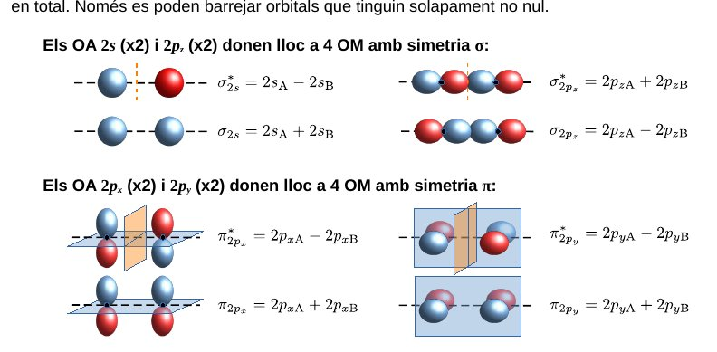
Diagrama (I): O₂, F₂, Ne₂ (Z ≥ 8)
E(1s) ≪ E(2s) ≪ E(2p) → només interaccionen OA del mateix tipus. Com que S(π) < S(σ): π2p menys estables que σ2p, π* més estables que σ*.
Ordre: σ2s < σ*2s < σ2p < π2p < π*2p < σ*2p
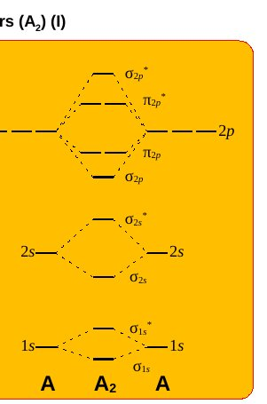
Diagrama (II): Li₂ … N₂ (Z < 8)
E(2s) ≲ E(2p) (no tan separats) → interacció (mescla) s–p: els OA 2s i 2pz interaccionen i σ2p puja per sobre dels π2p.
Ordre: σ2s < σ*2s < π2p < σ2p < π*2p < σ*2p
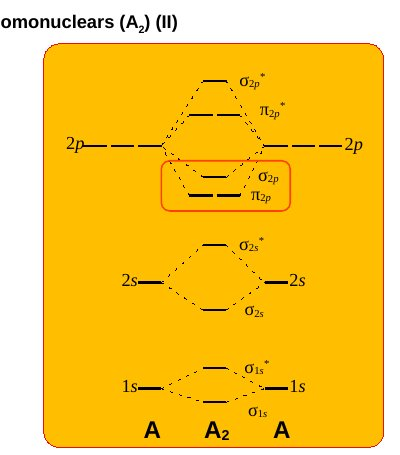
Exemples
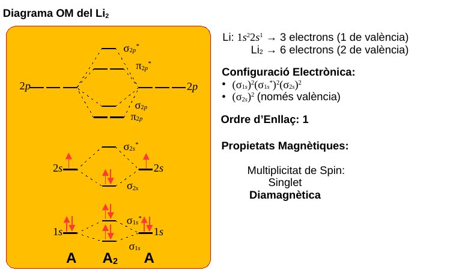
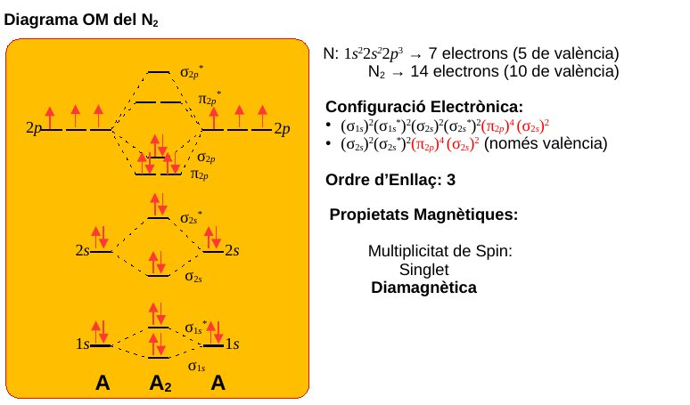
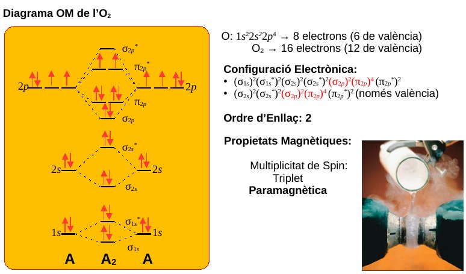
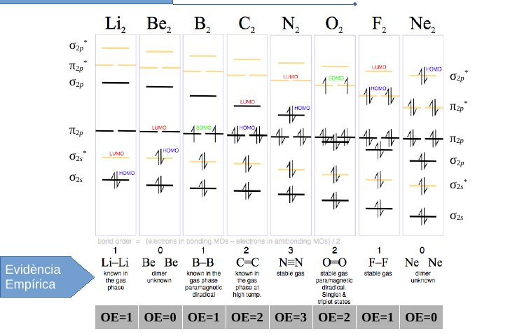
| Molècula | Configuració de valència | OE | Magnetisme | Energia d'enllaç (kJ/mol) | Distància (Å) |
|---|---|---|---|---|---|
| Li₂ | (σ₂ₛ)² | 1 | dia | 105 | 2,67 |
| Be₂ | (σ₂ₛ)²(σ*₂ₛ)² | 0 | — | ≈ 0 (no estable) | — |
| B₂ | (σ₂ₛ)²(σ*₂ₛ)²(π₂ₚ)² | 1 | para | 290 | 1,59 |
| C₂ | (σ₂ₛ)²(σ*₂ₛ)²(π₂ₚ)⁴ | 2 | dia | 620 | 1,24 |
| N₂ | (σ₂ₛ)²(σ*₂ₛ)²(π₂ₚ)⁴(σ₂ₚ)² | 3 | dia | 941 | 1,10 |
| O₂ | (σ₂ₛ)²(σ*₂ₛ)²(σ₂ₚ)²(π₂ₚ)⁴(π*₂ₚ)² | 2 | para | 494 | 1,21 |
| F₂ | … (π*₂ₚ)⁴ | 1 | dia | 160 | 1,42 |
| Ne₂ | … (π*₂ₚ)⁴(σ*₂ₚ)² | 0 | — | ≈ 0 (no existeix) | — |
6.9 Diatòmiques heteronuclears del 2n període (AB)
- Mateixos principis que A₂, però els OA dels dos àtoms no tenen la mateixa energia.
- Els OA de l'àtom més electronegatiu (B) són més baixos en energia.
- Els OM enllaçants s'assemblen més als OA de l'àtom més electronegatiu (coeficient/pes més gran); els antienllaçants, a l'àtom més electropositiu.
- El 2s de l'àtom més electropositiu és a prop del 2p del més electronegatiu → el diagrama OM sempre té els orbitals π2p per sota del σ2p (tipus II).
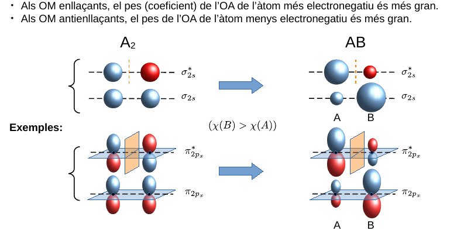
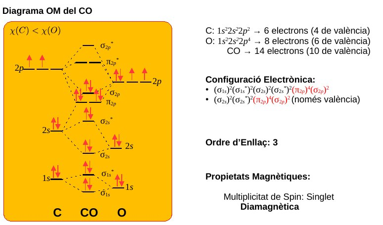
Heteronuclears amb hidrogen: HF
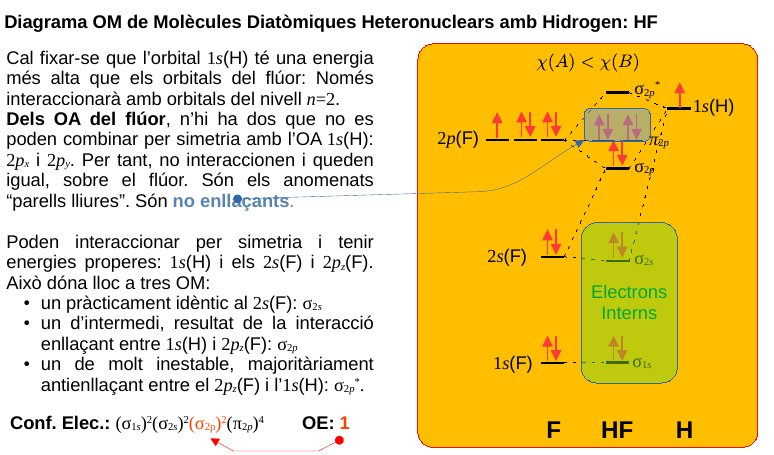
- L'orbital 1s(H) té energia més alta que la majoria del F → interaccionarà amb orbitals del nivell n = 2.
- Del F: 2px i 2py no es poden combinar per simetria amb 1s(H) → queden iguals, sobre el F: no enllaçants ("parells lliures").
- Poden interaccionar 1s(H), 2s(F) i 2pz(F) → 3 OM:
- un pràcticament idèntic al 2s(F): σ2s (gairebé no enllaçant),
- un d'intermedi entre 1s(H) i 2pz(F): σ2p (enllaçant),
- un de més inestable, majoritàriament antienllaçant 2pz(F)–1s(H): σ*2p.
- Conf.: (σ₁ₛ)²(σ₂ₛ)²(σ₂ₚ)²(πnb)⁴ → OE = 1. Els e⁻ interns (1s, 2s del F) no participen.
6.10 Molècules poliatòmiques
- Els principis són els mateixos: interaccionen OA (o combinacions dels mateixos) amb la mateixa simetria i energia semblant.
- Degut a la variabilitat de geometria, es fa complicat sense ajut d'ordinadors.
- La teoria OM és la teoria d'elecció en química teòrica i computacional.
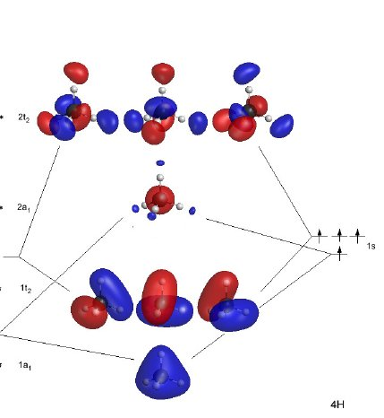
7. Enllaç iònic
7.1 Visió OM: LiF (Δχ molt gran)
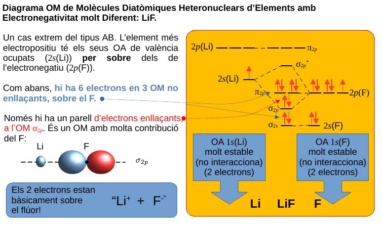
- Cas extrem d'AB: l'element electropositiu (Li) té els OA de valència ocupats (2s) per sobre dels de l'electronegatiu (2p del F).
- Hi ha 6 e⁻ en 3 OM no enllaçants sobre el F.
- Només un parell enllaçant a l'OM σ2p, amb molta contribució del F.
- Els OA 1s(Li) i 2s(F) són molt estables (no interaccionen).
- → Els 2 e⁻ estan bàsicament sobre el fluor: "Li⁺ + F⁻".
7.2 Visió de Lewis
- Li + F → Li⁺ + F⁻: Li cedeix el seu e⁻ i F l'accepta. Tots dos assoleixen octet/duet (F → [Ne], Li⁺ → [He]). No hi ha compartició.
- La transferència crea espècies carregades: ions. Cada ió és estable (capa completa), però amb càrrega → interaccions coulòmbiques:
- Càrregues oposades → U negativa; més negativa com més petita d. Els ions de signe contrari són més estables junts.
- Problema: limd→0 U(d) = −∞ ⇒ col·lapse?!
7.3 Potencial de Born
No oblidar que cations i anions tenen electrons interns (Li⁺: 1s²): si s'acosten indefinidament, apareix repulsió entre els núvols electrònics.
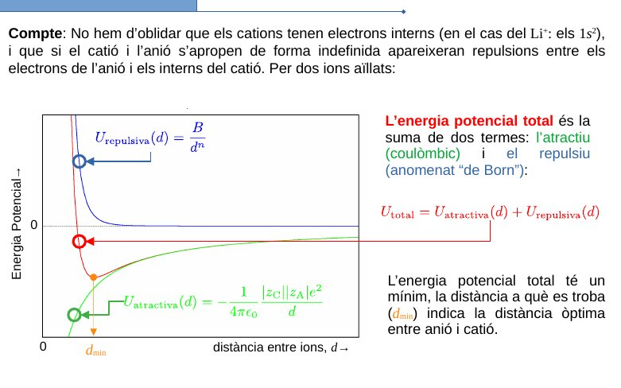
- El terme coulòmbic és de llarg abast; el repulsiu (Born) és de curt abast.
- Utotal té un mínim: la distància deq és la distància òptima entre anió i catió.
- Per un parell aïllat: situació en què el parell és òptimament estable a una distància donada, més que separats a ∞ → "enllaç iònic", equilibri entre atracció coulòmbica catió–anió i repulsió entre electrons interns.
- En general els compostos iònics són sòlids (xarxes ordenades de cations i anions): interaccions atractives entre ions de signe contrari i repulsives entre ions del mateix signe (més llunyans).
- La intensitat d'aquestes interaccions depèn de l'estructura del sòlid.
Conseqüències: més càrrega i ions més petits → energia reticular més gran → punt de fusió més alt i més duresa (MgO ≫ NaCl).
Propietats dels sòlids iònics: durs però fràgils (un desplaçament enfronta ions del mateix signe), alts punts de fusió, aïllants en estat sòlid però conductors fosos o en dissolució, sovint solubles en dissolvents polars (aigua).
L'energia de formació es pot calcular amb el cicle de Born–Haber (sublimació + ionització + dissociació + afinitat electrònica + energia reticular).
8. Enllaç metàl·lic
8.1 Metalls
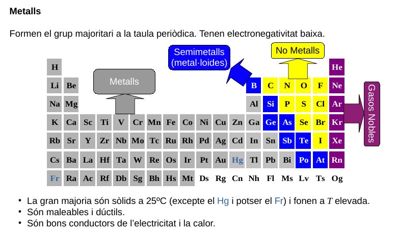
- Grup majoritari de la taula periòdica. Electronegativitat baixa.
- Gairebé tots sòlids a 25 °C (excepte Hg i potser Fr) i fonen a T elevada.
- Mal·leables i dúctils. Bons conductors de l'electricitat i la calor.
8.2 Naturalesa
- No es pot explicar amb l'enllaç covalent de Lewis (els electrons són mòbils).
- Energia d'ionització baixa: M → M⁺ + e⁻ (perd fàcilment e⁻).
- Afinitat electrònica baixa: M⁻ → M + e⁻ (no agafa fàcilment e⁻).
- Model: ions M⁺ envoltats d'un "mar" d'electrons mòbils (electrons "lliures").
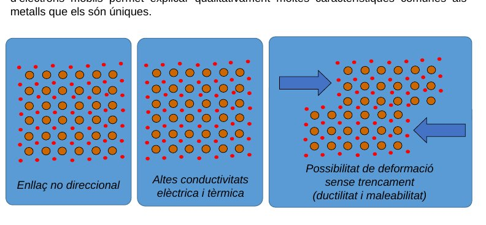
8.3 "Enllaç covalent a l'engròs" (teoria OM)
Fil hipotètic d'àtoms d'H, afegint-ne cada cop més:
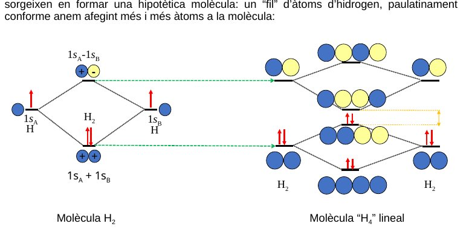
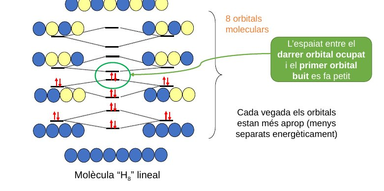
- Cada vegada els orbitals estan més a prop (menys separats energèticament).
- L'espai entre el darrer orbital ocupat i el primer buit es fa petit.
W. Heitler i F. London (1927) van aplicar el model OM als metalls. Mètode CLOA: OM com a combinacions lineals dels OA de la capa de valència: n OA → n OM, la meitat enllaçants i la meitat antienllaçants.
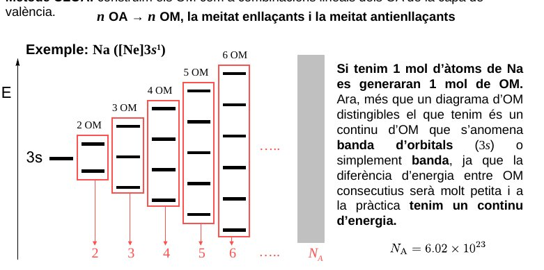
- 1 mol d'àtoms de Na (NA = 6,02·10²³) → 1 mol d'OM, impossibles de distingir: formen un continu → banda d'orbitals (3s) o simplement banda. La diferència d'energia entre OM consecutius és molt petita → continu d'energia.
8.4 Teoria de bandes
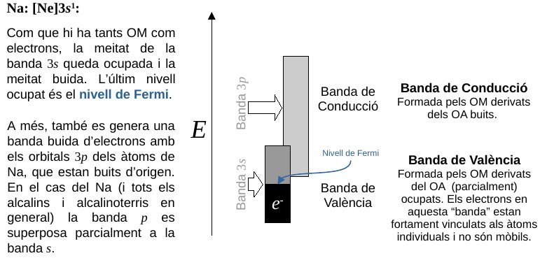
- Na: [Ne]3s¹ → la banda 3s queda meitat ocupada, meitat buida. L'últim nivell ocupat: nivell de Fermi.
- També hi ha una banda buida (de 3p del Na). En alcalins i alcalinoterris, la banda p se superposa parcialment amb la s.
- Banda de València: OM derivats dels OA (parcialment) ocupats; e⁻ fortament vinculats als àtoms, no mòbils.
- Banda de Conducció: OM derivats dels OA buits.
Paràmetre clau per a qualsevol sòlid: separació energètica (band gap, Eg) entre el nivell de Fermi i el primer nivell buit.
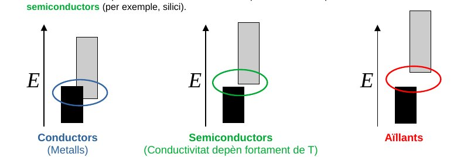
| Tipus | Band gap | Comportament | Exemples |
|---|---|---|---|
| Conductors | ≈ 0 | e⁻ promocionables amb poca energia (camp elèctric extern) | Metalls |
| Semiconductors | moderat (~1–3 eV) | L'energia tèrmica pot promocionar alguns e⁻ → conductivitat que depèn fortament de T (augmenta amb T) | Si, Ge, GaAs |
| Aïllants | gran (> 3 eV) | e⁻ no poden passar a la banda de conducció; vinculats a capes externes (enllaç covalent) | Diamant |
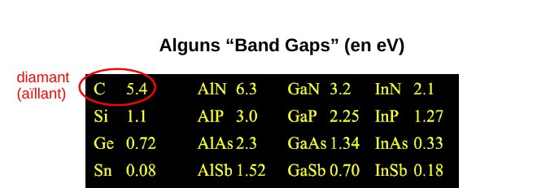
9. Annex: Teoria de l'Enllaç de València (EV)
9.1 Idea
- Enllaç = recobriment d'orbitals atòmics monoocupats de dos àtoms. Enllaços localitzats.
- El recobriment duu una densitat electrònica superior a la regió internuclear, és a dir, enllaç.
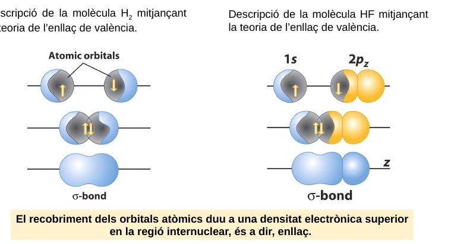
9.2 Molècules amb enllaços múltiples: N₂
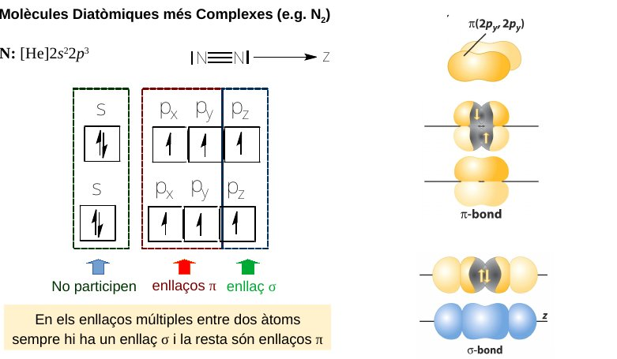
- N: [He]2s²2p³ → 3 e⁻ desaparellats (px, py, pz).
- 2pz + 2pz (al llarg de l'eix) → 1 enllaç σ.
- 2px+2px i 2py+2py (laterals) → 2 enllaços π.
- Els 2s no participen (parells lliures).
9.3 El problema de la geometria: H₂O
- O: 1s²2s²2px²2py¹2pz¹ (2py i 2pz monoocupats) + 2 H: 1s¹.
- Enllaç σ (2py + 1s(Ha)) i σ (2pz + 1s(Hb)); 2s² i 2px² serien parells lliures.
- Predicció: angle HOH = 90°, però l'experimental és ≈ 104,5° (proper al tetraèdric 109,5°). ✗
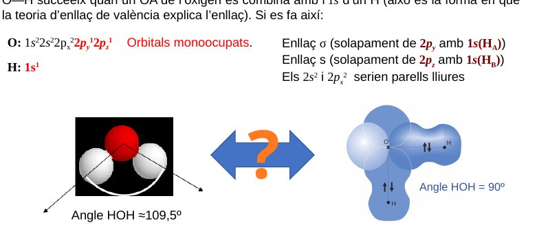
→ Cal introduir els orbitals híbrids.
9.4 Orbitals híbrids
- Resultat d'una combinació lineal de dos o més orbitals hidrogenoides del mateix àtom i la mateixa capa (n). Es generen tants híbrids com OA s'han combinat.
- Els híbrids tenen la mateixa orientació que els enllaços de la molècula.
- La hibridació s'utilitza per explicar geometries experimentals: no és un model predictiu.
| OA hibridats | Nom | Nº híbrids | Geometria | Angle | Exemple | Nº estèric VSEPR |
|---|---|---|---|---|---|---|
| 1 s + 1 p | sp | 2 | lineal | 180° | BeH₂, CO₂, C₂H₂ | 2 |
| 1 s + 2 p | sp² | 3 | trigonal plana | 120° | BF₃, C₂H₄ | 3 |
| 1 s + 3 p | sp³ | 4 | tetraèdrica | 109,5° | CH₄, NH₃, H₂O | 4 |
| 1 s + 3 p + 1 d | sp³d | 5 | bipiràmide trigonal | 90°/120° | PCl₅ | 5 |
| 1 s + 3 p + 2 d | d²sp³ (sp³d²) | 6 | octaèdrica | 90° | SF₆ | 6 |
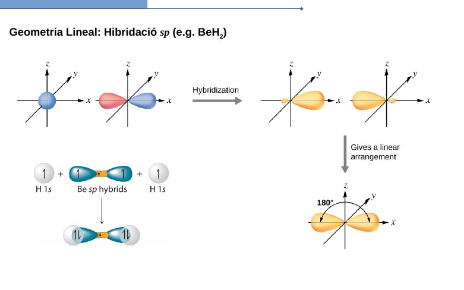
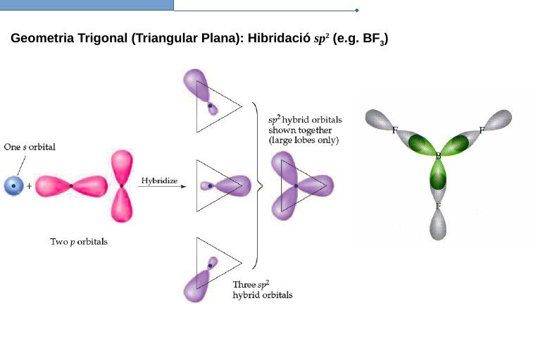
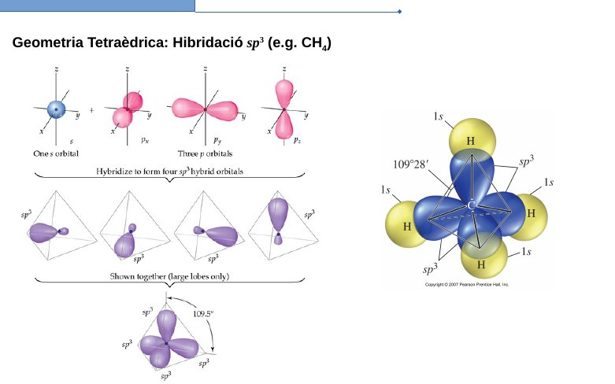
10. Resum final comparatiu
| Iònic | Covalent | Metàl·lic | |
|---|---|---|---|
| Elements | metall + no metall (Δχ gran) | no metalls (Δχ petita) | metalls (χ baixa) |
| Mecanisme | transferència d'e⁻ | compartició d'e⁻ | mar d'e⁻ deslocalitzats |
| Direccionalitat | no direccional | direccional (geometria) | no direccional |
| Estructura | xarxa cristal·lina d'ions | molècules discretes o xarxes covalents | xarxa de cations |
| Estat (25 °C) | sòlids, p.f. alts | gasos/líquids/sòlids de p.f. baix (moleculars) o molt alt (xarxa: diamant, SiO₂) | sòlids (excepte Hg) |
| Conductivitat | només fos o dissolt | en general aïllants (grafit, excepció) | alta (sòlid i líquid) |
| Mecànica | durs i fràgils | variable | mal·leables i dúctils |
| Teoria | Coulomb + Born | Lewis, VSEPR, EV, OM | mar d'e⁻, teoria de bandes |
| Teoria | Què explica | Què NO explica |
|---|---|---|
| Lewis | Connectivitat, ordre d'enllaç, càrregues formals, ressonància | Geometria, energia, paramagnetisme O₂, B₂H₆ |
| VSEPR | Geometria i angles (qualitatius), polaritat | Energies, naturalesa de l'enllaç |
| EV + hibridació | Enllaços σ/π localitzats, geometria (a posteriori) | No predictiva; paramagnetisme O₂ |
| OM | OE, energies, magnetisme, deslocalització, bandes en sòlids | Complicada sense ordinador en poliatòmiques |
- Comptar e⁻ de valència (± càrrega) → estructura de Lewis + CF + ressonància.
- Nombre estèric n+m → geometria bàsica → geometria derivada (AXₙEₘ) → angles i distorsions.
- Polaritat: suma vectorial de dipols segons la geometria.
- Hibridació de l'àtom central (= nº estèric) i nº d'enllaços σ i π.
- Si és diatòmica: diagrama OM (tipus I si Z ≥ 8 o tipus II si Z < 8 o heteronuclear), configuració, OE, magnetisme.